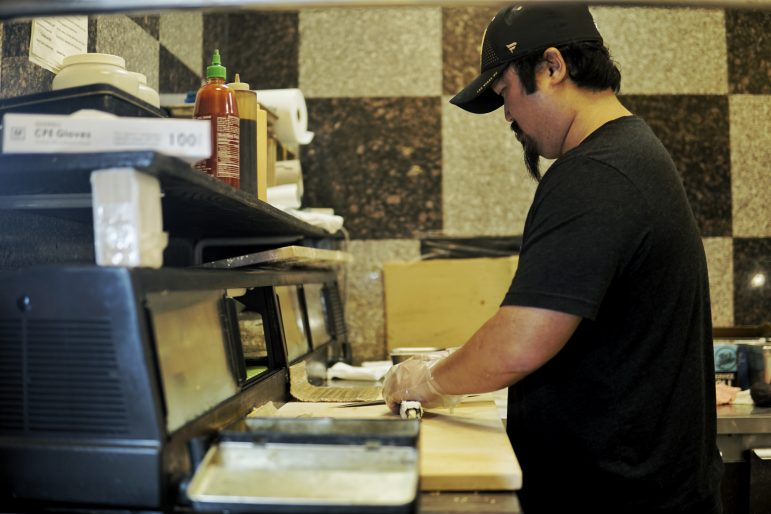
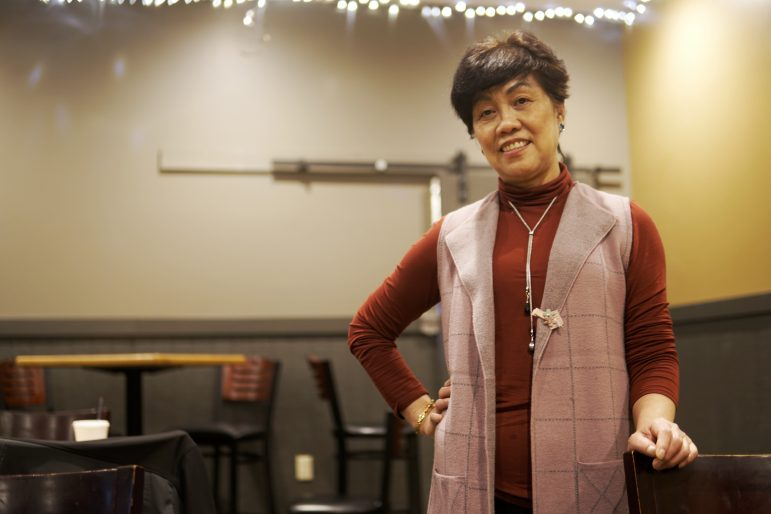

News
In Meridian Twp., two restaurants, two generations thrive on one street
Henry Kwok has been working in a restaurant as long as he can remember. He opened his bar, Henry's Place, three years ago side by side with Asian Buffet that his mom owned for 17 years.
Growing up in New York, he moved to Michigan with his mother in 1998, and Kwok has always helped out in his mother's restaurant.

It is hard at that time for this family. Li hasn't been away from Michigan for over 20 years. She has always hands on every little details in her restaurant. She worked day and night for seven day straight in order to raise her family.
"Henry is a good one," Hsiu Chin Li said. "He would always helped out in the restaurant after school. I think he learned a lot in there."

Kwok was influenced a lot by growing up in the restaurant and helping out for his mom. He thinks the lesson he learned in restaurant also guide him throughout his life.
"They definitely show me the part of hard work," Kwok said. "The part of persever of things go bad but you still have to put in effort."
Studying in supply chain management, Kwok worked in different industries and finally came back to the restaurant industry to help out with his mother in Okemos.
Kwok ran back and forth between two restaurants. "It makes me feel better that she can rely on me," Kwok said.